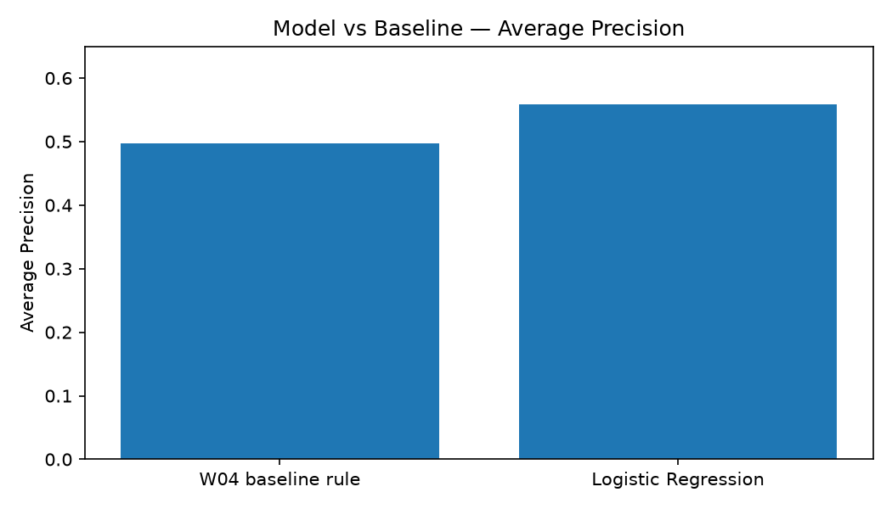
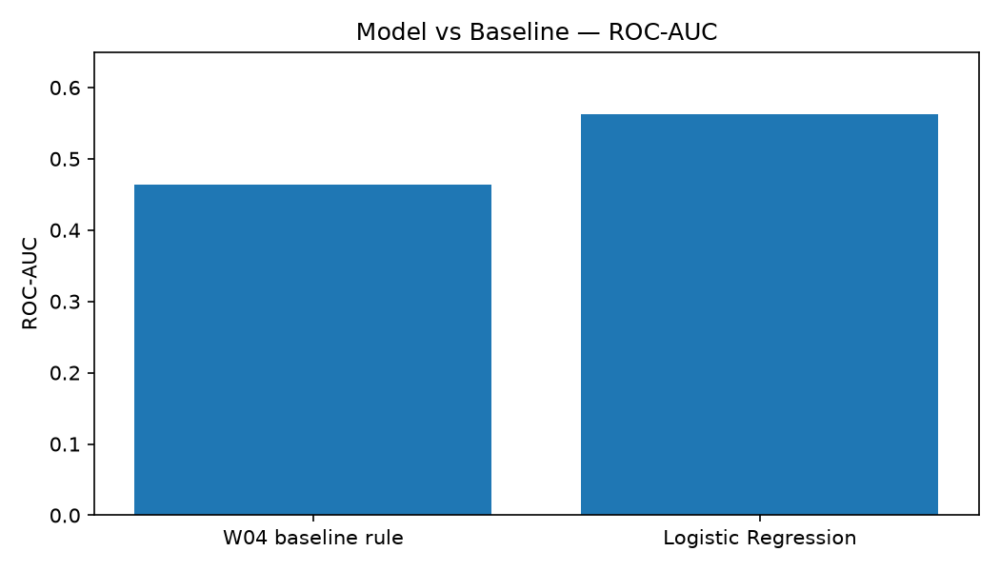

Five-sentence summary
This study asks whether observed content and search-performance signals can help prioritize pages for human review for a possible content refresh.
I compared a simple three-signal rule-based baseline with a Logistic Regression classifier using page, search, and recent performance features.
The evaluation used an 80/20 split grouped by client to prevent same-client data leakage, with Average Precision and ROC-AUC measured on the held-out test set.
Logistic Regression measured higher Average Precision (0.5582 vs 0.4974) and ROC-AUC (0.5621 vs 0.4644) than the baseline on the grouped test split.
These results are directional decision-support evidence under the evaluated conditions, not proof that a refresh will improve future search performance.
What decision should the model support?
Research question: Can observed content and search-performance signals be used to prioritize pages for human review for a possible content refresh?
Decision supported: Which pages should a content or SEO reviewer examine first?
Action: A human reviewer inspects the recommended pages and decides whether to refresh, monitor, or leave each one.
Why prioritization matters
Content teams cannot manually inspect every page in a large inventory with equal effort. Review capacity is limited, and a naive or uniform approach wastes reviewer time on pages that do not need attention while missing pages that do.
The practical problem is deciding which pages deserve review first. This project tests whether observed content and search-performance signals can support that prioritization, producing a ranked queue rather than a prescriptive fix.
The output is decision-support: it recommends, and a human decides. It does not automate a refresh, rewrite, or deletion.
A focused, public-safe slice
Dataset & grain
The work uses the anonymized content-refresh starter slice from the FlyRank ML Internship dataset. The file contains 30,000 page-level observations across 32 pseudonymized clients; one row represents a content-page observation with search, content, and recent performance attributes.
Time windows & exclusions
The starter CSV is a single pre-computed snapshot. No forward-looking time windows are constructed from the daily warehouse. content_id and client_id are retained only for grouped validation and deduplication; they are never used as model features.
Feature exclusions
The following fields are never used as model features:
trend_direction— this is the source of the binary label ("down"becomes the positive class).trend_pct— derived from the same source as the label; using it would leak information.content_id,client_id— used only for grouping and splitting, never as predictive inputs.
Simple model, honest evaluation.
Target (proxy)
The modeling target is a binary proxy: trend_direction == "down" is treated as attention-positive; other observed directions (up, stable, new, flat) are the comparison class. This is not a label for refresh success — it is a same-window bucket that identifies pages with a measured downward trend.
Model
Logistic Regression (sklearn, max_iter=1000, random_state=42) inside a Pipeline with a ColumnTransformer. Numeric features: median-impute then StandardScaler. Categorical: most-frequent impute then OneHotEncoder.
Features (11 total)
Numeric (10): search_volume, cpc, word_count, char_count, impressions_90d, clicks_90d, pageviews_90d, sessions_90d, content_age_days, ctr.
Categorical (1): competition_level.
Week-4 baseline
A 3-point scoring rule using data-driven median thresholds: content age ≥ 236 days (+1), CTR < 0.07 (+1), impressions_90d ≥ 731 (+1). Pages are mapped to refresh (score 3), monitor (score 2), or leave (score ≤ 1).
Validation design
The final evaluation uses GroupShuffleSplit (80/20) grouped by client_id. Training: 23,837 rows (25 clients). Test: 6,163 rows (7 clients). Client overlap: 0.
A random stratified split on the same data produced higher measured Average Precision and ROC-AUC than the grouped split, illustrating why grouped validation is more conservative for this dataset.
Leakage checks
The Week-6 validation audit verified: (1) no trend_direction or trend_pct appears in the feature set, (2) no feature name contains future-looking or target-derived keywords, (3) zero client overlap between train and test. All checks passed.
Measured performance vs the baseline
| Method | Average Precision | ROC-AUC |
|---|---|---|
| W04 baseline rule | 0.4974 | 0.4644 |
| Logistic Regression | 0.5582 | 0.5621 |
| Difference (model − baseline) | +0.0609 | +0.0977 |
Average Precision

ROC-AUC

Validation inflation (Week 6 finding)
| Split design | Average Precision | ROC-AUC |
|---|---|---|
| Random stratified 80/20 | 0.6251 | 0.6111 |
| Grouped by client 80/20 | 0.5582 | 0.5621 |
| Inflation | +0.0669 | +0.0490 |
The random split inflates both metrics because pages from the same client share patterns. The grouped split prevents this and is the honest estimate.
What this work cannot claim
- Proxy target: The label
trend_direction == "down"is a same-window bucket, not a future decline and not a measure of refresh success. A page flagged as "down" may not need a refresh, and refreshing it may not improve performance. - No temporal separation: Features and the label are computed from the same observation window. The GUIDE.md recommends features from a prior 90-day window predicting decline over the next 30 days; this analysis uses a single snapshot.
- Observational evidence: The study measures associations between signals and the proxy label. It does not show that refreshing a page causes better search performance. That would require an experimental or causal design.
- Validation scope: Results come from a single grouped evaluation with one random seed (42). No confidence intervals, no cross-validation, and no time-aware split are reported.
- No Precision@K: The GUIDE.md specifies Precision@K for review queues. This capstone reports Average Precision and ROC-AUC; Precision@K should be added in a production deployment.
- Moderate performance: The model improves on the baseline, but neither metric is close to perfect. ~0.56 ROC-AUC suggests the signal is real but weak.
- Baseline threshold leakage: The baseline medians (content_age_days, ctr, impressions_90d) are computed on the full 30,000-row dataset before the train/test split. This means test-set information partially leaks into the baseline thresholds.
Turn scores into review actions.
Refresh first (score = 3)
Pages meeting all three signals — stale content (age ≥ median), low CTR (< median), and visible (impressions ≥ median) — are the highest-priority review candidates. A human reviewer should verify the content and search intent before acting.
Monitor closely (score = 2)
Pages with two of three signals have moderate evidence. Review before deciding whether a refresh is justified. Common patterns: stale + visible, or low CTR + visible.
Leave for now (score ≤ 1)
Pages with limited evidence should not be prioritized. Revisit when observed signals change.
Action distribution across 30,000 pages
| Action | Count | Share |
|---|---|---|
| leave | 15,112 | 50.4% |
| monitor | 13,001 | 43.3% |
| refresh | 1,887 | 6.3% |
Inspect the work behind the paper.
Repository
The repository contains all notebooks, figures, and the deployed paper source.
Reproducibility summary
Python 3.11 | scikit-learn | pandas | numpy. Rows: 30,000. Train: 23,837 (25 clients) | Test: 6,163 (7 clients). Client overlap: 0. Model AP: 0.5582 | Model ROC-AUC: 0.5621. Baseline AP: 0.4974 | Baseline ROC-AUC: 0.4644. All code cells in the capstone notebook execute without errors.
Built on the FlyRank ML Internship dataset.
This research artifact was built as part of the FlyRank ML Internship using the internship dataset and its public-safe anonymized release.
Research framing and implementation are the author's work. Results and claims are limited to the evaluated data, features, and validation design described above.